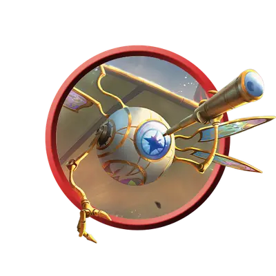

Диво летающее
Flying Wonder
Крошечный Конструкт, без мировоззрения

Класс Защиты 12 Инициатива +2 (12)
Хиты 2 (1к4)
Скорость 5 футов, Полёта 30 футов
| мод | спас | ||
|---|---|---|---|
| СИЛ | 2 | −4 | −4 |
| ЛОВ | 15 | +2 | +2 |
| ТЕЛ | 10 | +0 | +0 |
| мод | спас | ||
|---|---|---|---|
| ИНТ | 3 | −4 | −4 |
| МДР | 10 | +0 | +0 |
| ХАР | 1 | −5 | −5 |
Иммунитеты Яд; Истощение, Отравленный
Чувства пассивное Восприятие 10, Слепое зрение 60 футов
Языки знает Общий, но не говорит
Опасность 0 (0 опыта; БВ +2)
Особенности
Увеличенная грузоподъёмность. Диво может нести вплоть до 100 фунтов.
Завод. Диво Бессознательно, пока другое существо не потратит 1 минуту, чтобы завести его уникальным для этого дива ключом. Заведённое диво функционирует в течение 24 часов или пока существо действием Использование не деактивирует его, коснувшись уникальным для этого дива ключом. Деактивированное диво вновь Бессознательно, пока его не заведут.
Бонусные действия
Перезвон. Диво играет весёлую мелодию с выверенным тактом. Оно выбирает одного видимого им в пределах 60 футов союзника; до начала следующего хода дива этот союзник получает Преимущество на следующую проверку характеристики с Музыкальным инструментом или Инструментами ремонтника.
Ускорение. Диво совершает действие Рывок.
Бонус мастерства +2